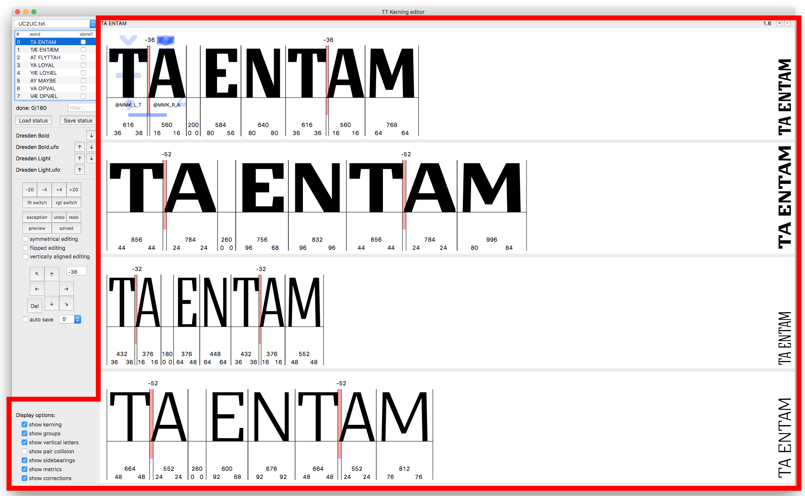
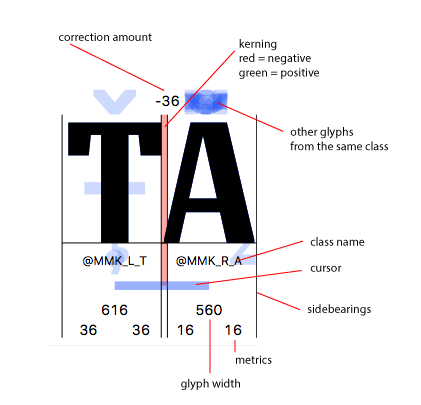
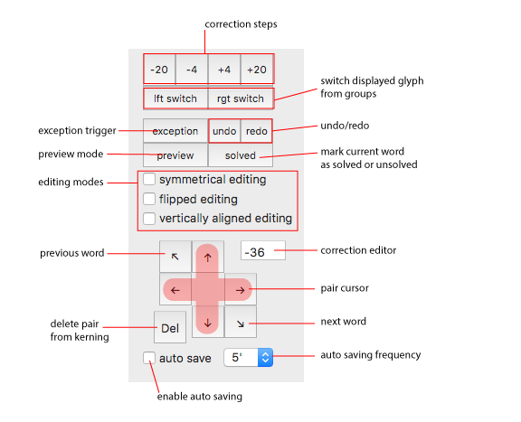

The kerning view and its display options. This view displays the sequence of glyph provided by the texts in each opened font. Its appereance is controlled by the display option checkboxess in the lower left corner of the user interface

Let’s look in detail to what is displayed for each pair

Texts manager. This component handles the text data stored into the application. It is possible to swap between different lists, mark some words as done, filter the list according to letters combination and manage the status of the job (save and load). Each word is accompained by an index which can be used to refer easily to it.

Fonts order manager. This component handles the order of the fonts into the kerning view. Each opened font – if saved on the computer – is displayed in the view and its name in this component. Arrows are provided in order to change the order.
The joystick. This component contains buttons mostly related to data manipulation (display options are stored separately). These buttons are linked to a shortcut, keyboard is usually a faster way than mouse to kern pairs. The shortcuts are listed at the end of the documentation.
